School Forms
Staff Guide
For Staff and School Contact accounts
School Forms collects the forms parents fill in online and gives you a place to review them. As a staff member you can:
You cannot design forms, manage users, or change the site's settings — those belong to an administrator.
This guide covers both roles. They use the same screens; the one consistent difference is that a School Contact is tied to a single school, so there is no School filter anywhere and every list contains only that school's submissions. Where that matters, the step says so.
Open the School Forms address in your browser and sign in with the email address and password your administrator gave you.
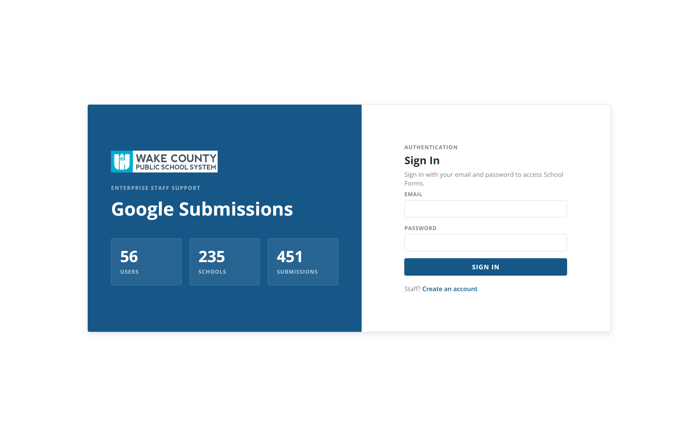
1 2 3 4Your administrator chooses how the sign-in screen behaves, so it can appear in one of three ways:
| What you see | What to do |
|---|---|
| Email and Password boxes (the normal screen) | Type your email and password, then click Sign In. |
| Organization and Test User lists | Choose your organization, then your name, then click Sign In. No password is needed — this is a demonstration mode. |
| An amber maintenance message | Sign-in is switched off while the site is being updated. Try again later. |
New staff can click Create an account below the sign-in button. The form asks for your Full Name, School, Email and Password. Your account starts with Staff access; an administrator decides which forms you can open.
Check that Caps Lock is off and that you are using the email address you registered with. There is no self-service "forgot password" link — ask an administrator to reset it. They can give you a temporary password, and the first time you sign in with it you are required to choose a new one. See 8.1 Changing your password.
After you sign in you land on Submissions. The menu is closed so your work has the full width of the screen — click the menu button in the top-left corner to open it.
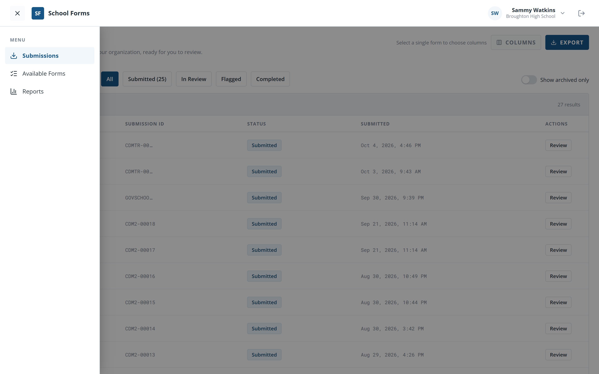
1 2 3 4 5 6 7The menu closes when you pick a section, click outside it, or press Esc.
An administrator can hide Available Forms and Reports in Settings → Menu Settings, and Documents has its own per-role switch. A missing item is a setting, not a fault. See 9.3 "I can't see it".
From time to time an administrator posts a notice to everyone, or to your role only. It appears as a banner at the top of the page content, above whatever you are working on.
A form can be public (everyone in your organization can open it) or private (an administrator grants access one account at a time). This part shows you which forms you hold and how to ask for one you don't.
Open the menu and choose Available Forms. The page lists every published form in your organization, grouped by your relationship to it.
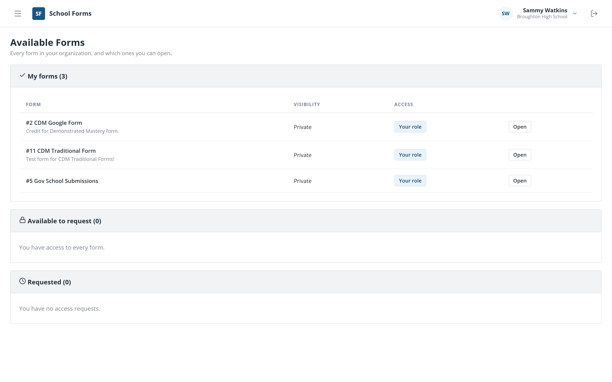
1 2 3 4The page has three sections:
| Section | What it means |
|---|---|
| My forms | You can open these now. |
| Available to request | A private form you do not hold. You can ask an administrator for it. |
| Requested | You asked, and nobody has answered yet. |
An administrator is notified in the app. You do not need to send an email as well.
The form returns to Available to request with the word Declined and, usually, the administrator's reason. You may ask again — Request access works the same way the second time.
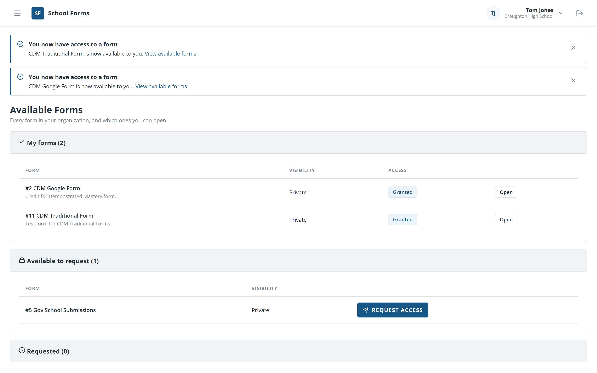
1 2 3If you open a form you do not hold — for example from a link a colleague sent you — the queue shows a locked panel explaining that the form is private, with the same Request access button.
The queue is where you spend most of your time. It is also where you can fill in staff-only fields without opening a submission at all — see Part 4.
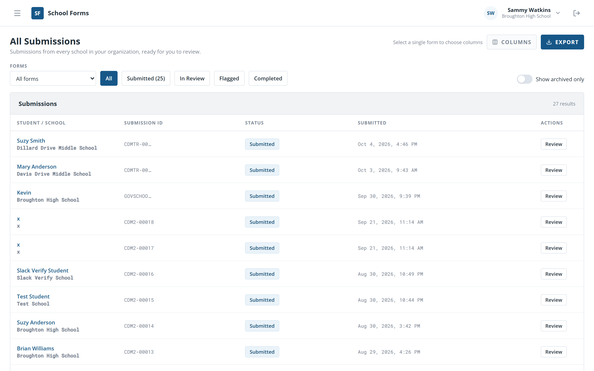
1 2 3 4 5 6 7 8There is no table/card switch. The grid is a table on a desktop screen and stacks into cards on a narrow one, automatically. Inline editing is only available in the table layout.
Click a status chip to show only submissions in that state. The Submitted chip carries a count so you can see at a glance how much is waiting.
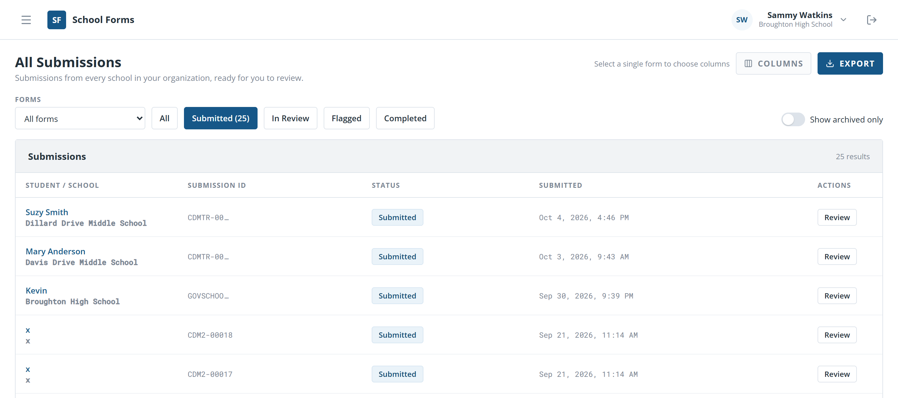
1When more than one form is open to you, the Forms dropdown appears. Choosing a form narrows the queue and adds that form's fields as columns.
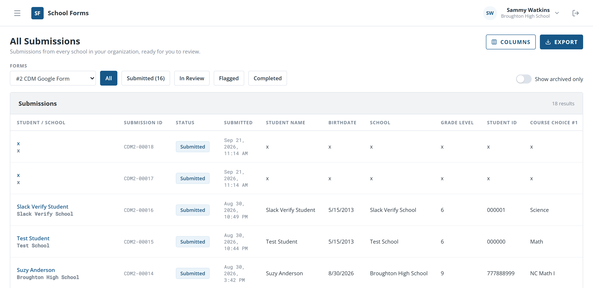
1If only one form is open to you, the queue selects it for you and the dropdown is not shown — there is no choice to make.
Click Columns to choose which fields appear in the grid.
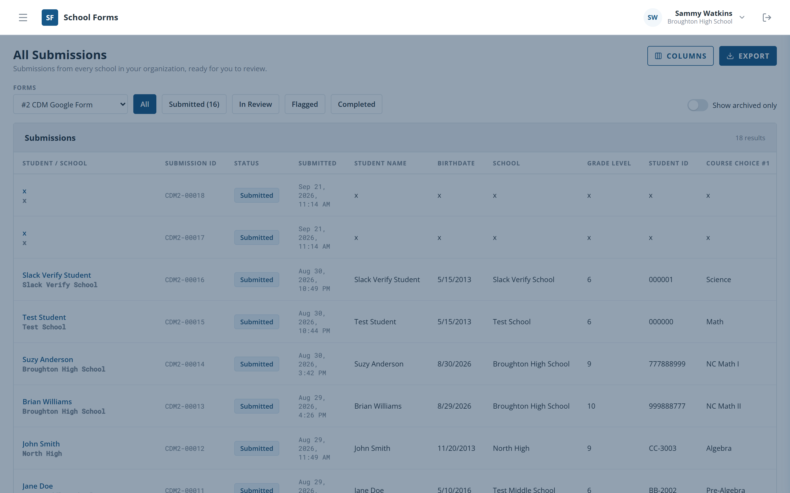
1 2 3 4Archiving puts a submission away without deleting it. Switch on Show archived only to list the archived ones instead of the live ones.
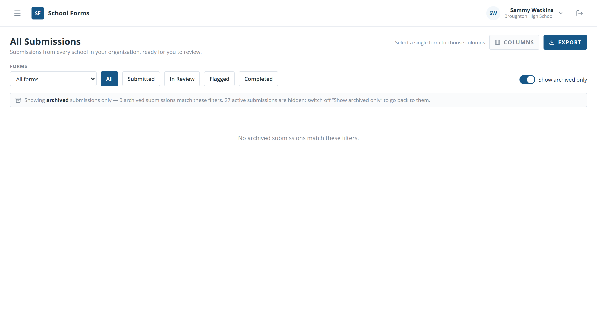
1 2An archived submission is hidden from the queue, exports, reports, the documents list and the sign-in summary. It is not deleted: you can still open it from a bookmark, and you can restore it. See 5.4 Archiving and restoring.
Staff-only fields are the internal half of a form: questions an administrator added for you, which parents never see. You can fill them in two ways — quickly, in the queue, or in full on the submission page.
In the designer, a form has two lists of fields: Form Fields, which parents answer, and Staff Only Fields, which they never see. Every staff-only field also carries an Access setting, so a field can be visible to Staff but not to School Contacts, or to Administrators only.
In the queue, staff-only columns are tinted and sorted to the end, after the parent's answers.
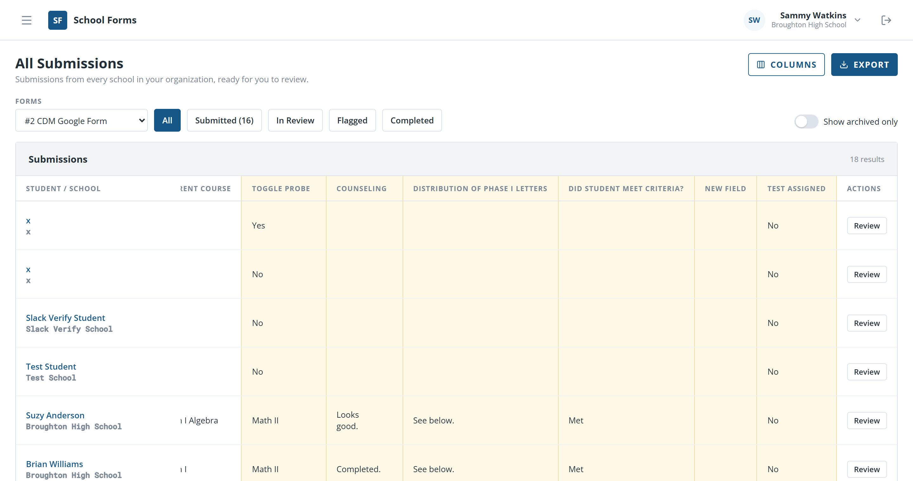
1 2 3This is the fastest way to fill in one or two fields for several students in a row. The value is saved to the submission the moment you finish editing the cell.
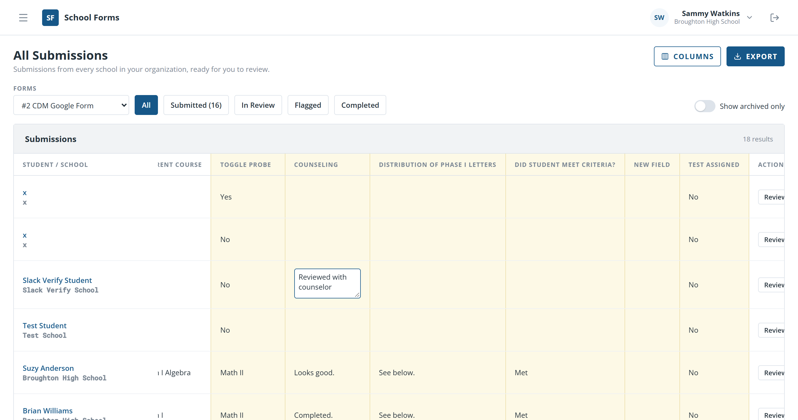
1A Toggle field is a switch with exactly two answers. Flipping it saves immediately — there is no separate confirm step.
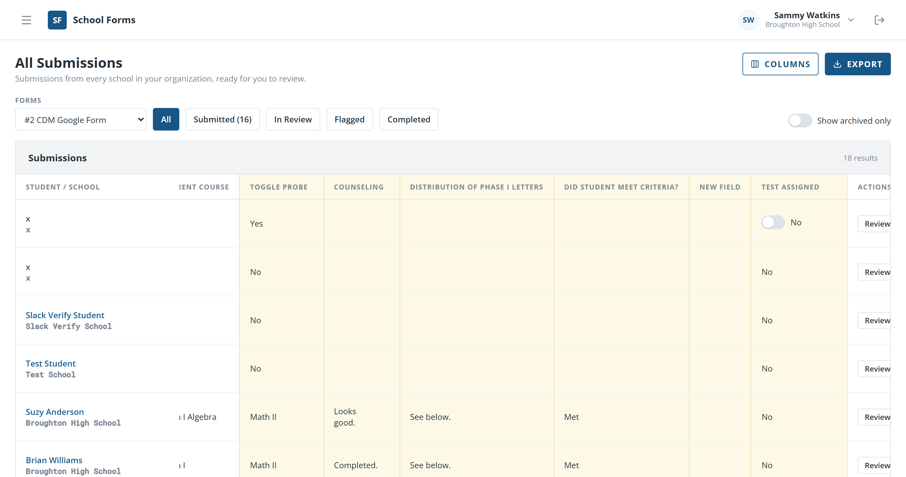
1Cells that offer a list of choices open a small menu instead of a text box.
| Key or action | What happens |
|---|---|
| Enter | Saves the cell. |
| Shift+Enter | New line inside a text area (does not save). |
| Esc | Discards your edit and restores the previous value. |
| Clicking another cell | Saves the cell you were editing, then opens the new one. |
A parent's answers are shown in the queue but cannot be changed in it. To correct one, open the submission and use Edit — see 5.3.
Use this when you are reviewing a submission properly, or when a field needs a longer answer than fits in a cell.
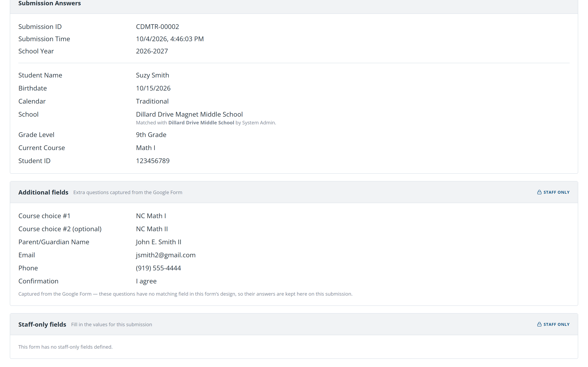
1 2 3 4After you save, a line under the button records who last saved these fields and when — for example Last saved by Sammy Watkins on 10/25/2026, 2:14 PM. It is there so a colleague can see whose answer they are looking at.
The card says This form has no staff-only fields defined. That is a decision the administrator made in the designer, not a fault.
| You want to… | Use |
|---|---|
| Fill in one field for many students | Inline in the queue — the field stays put and you move down the column. |
| Write a long note | Submission details — the boxes there are taller and have an Expand button. |
| Review a submission properly, then record your decision | Submission details — you can also change the status on the same page. |
| Change a parent's answer | Submission details — the queue is read-only for parent fields. |
Both methods write to the same submission, so you can use either one at any time.
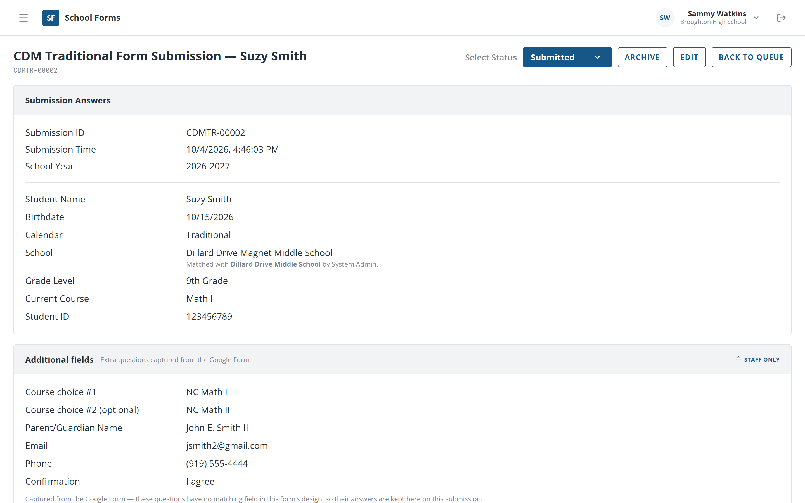
1 2 3 4 5 6The ID is what you quote when you need to talk about a submission with a parent or a colleague. It is also the last part of the page's address, so a bookmark keeps working.
Use Select Status in the page header. The change saves as soon as you pick a value — there is nothing to confirm.
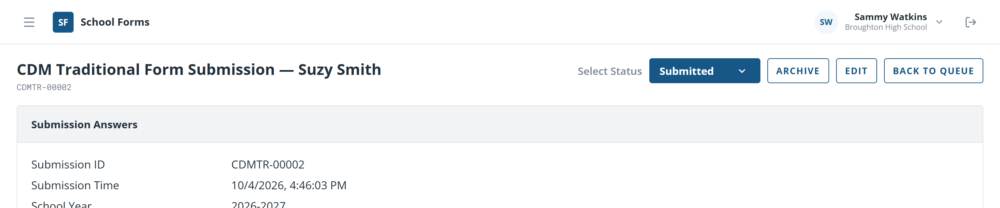
1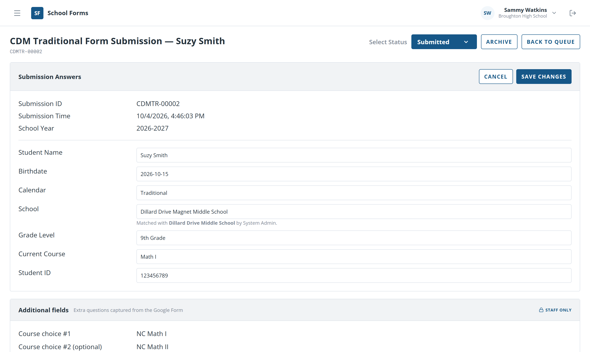
1 2Use this to correct a typo or a misread entry. The parent is not notified, and the original wording is not kept — so if the answer is in doubt, record the reason in a staff-only field before you change it.
Archive in the page header puts a submission away. It disappears from the queue, exports, reports and the documents list, but nothing is deleted.
An archived submission shows a notice at the top of the page explaining that it is hidden and who archived it, and when.
Permanent deletion is an administrator action and is never offered on a staff account. Archiving is the reversible option, and it is the right one when you are unsure.
The Documents menu item and the document line on a submission appear only when an administrator has enabled them for your role. If you do not see them, the feature is off — not broken.
Click View PDF to preview a document without leaving the app. A panel slides in from the right with the document's details and the page preview.
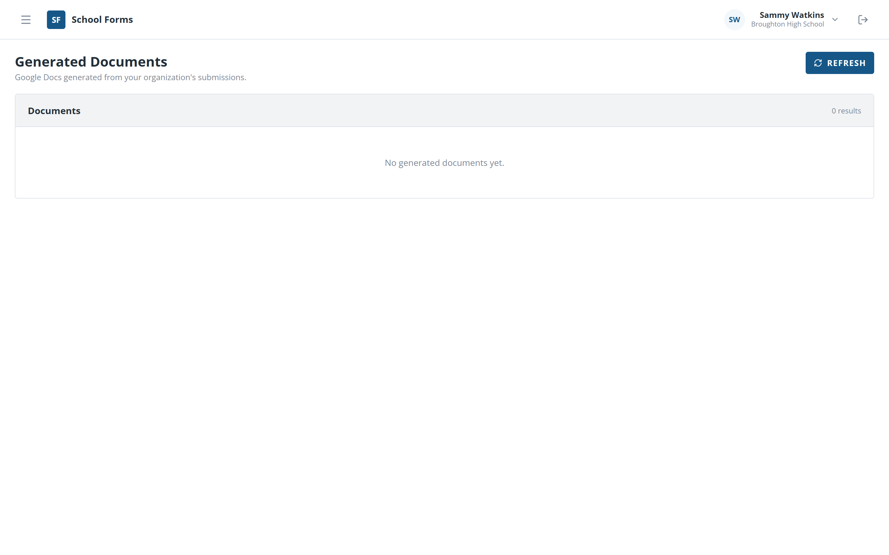
1 2 3Open the submission it belongs to. A Retry button appears beside the failed document, and a document that is still being made shows a spinner instead.
School Forms builds the link but does not grant access to the file. If Google says you do not have permission, ask a colleague to share the document or the folder it lives in.
Reports builds a filtered table from one form's submissions and exports exactly what is on screen — as CSV, Excel or PDF.
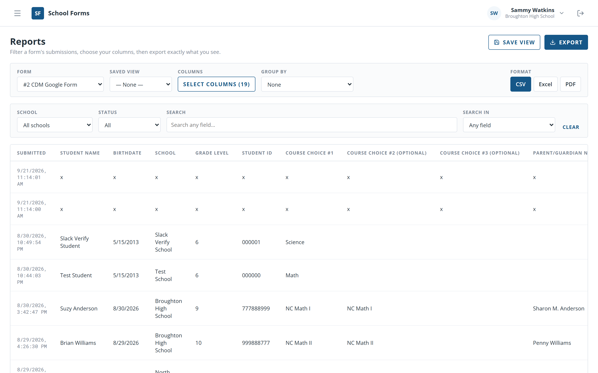
1 2 3 4 5 6 7The preview grid and the exported file are built from the same query, so the file always matches the screen. If the preview looks wrong, change the filters before exporting.
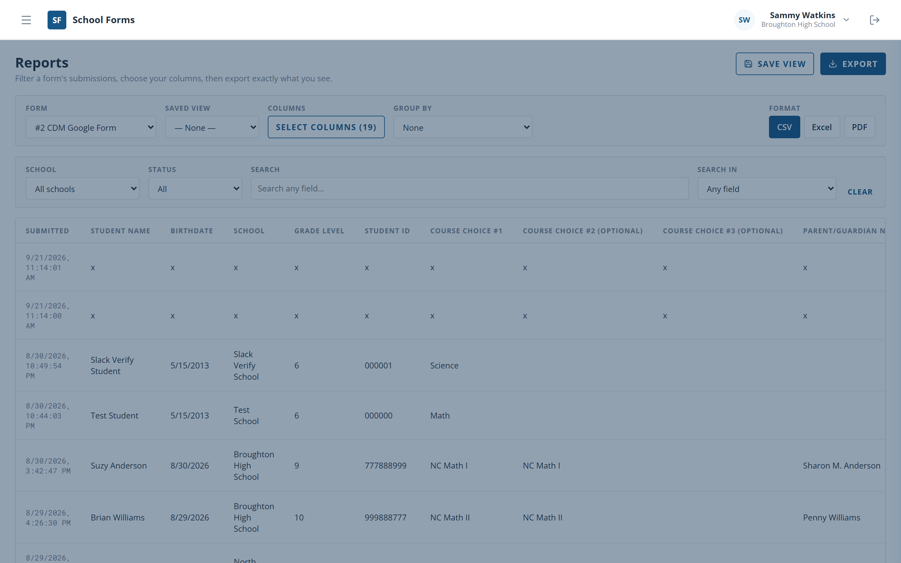
1 2 3If you untick every column, the report falls back to every column you have access to rather than showing nothing — so a report is never empty by accident.
Choose a Group by column to break the report into sections with a row count each. Click a group heading to collapse or expand it.
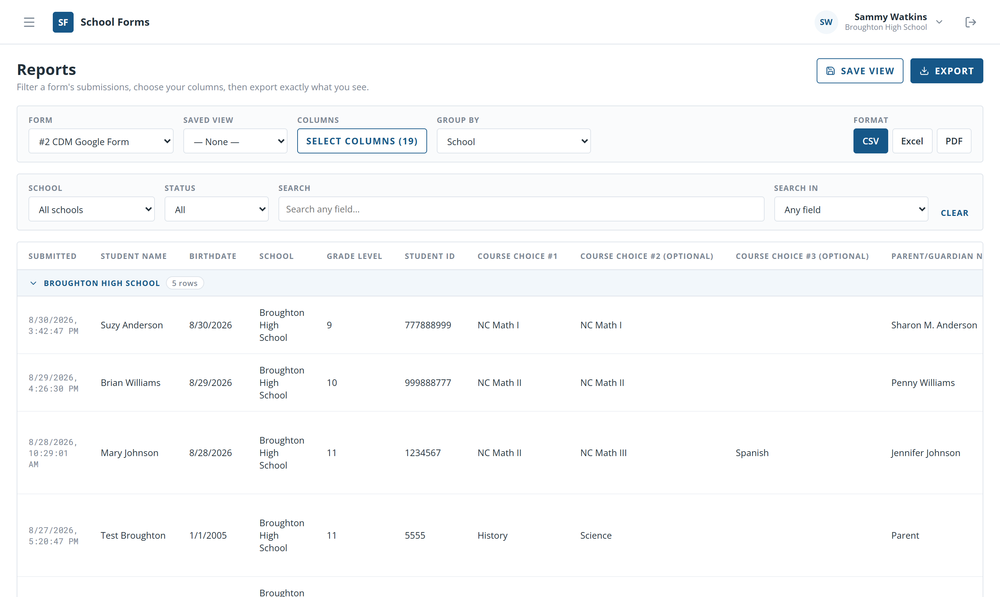
1Saved views are private to your account. To change one, apply it, adjust the report, then click Update View. Make Default marks it as the one you want first, and Delete removes it.
The queue has its own quick export, which is CSV only.
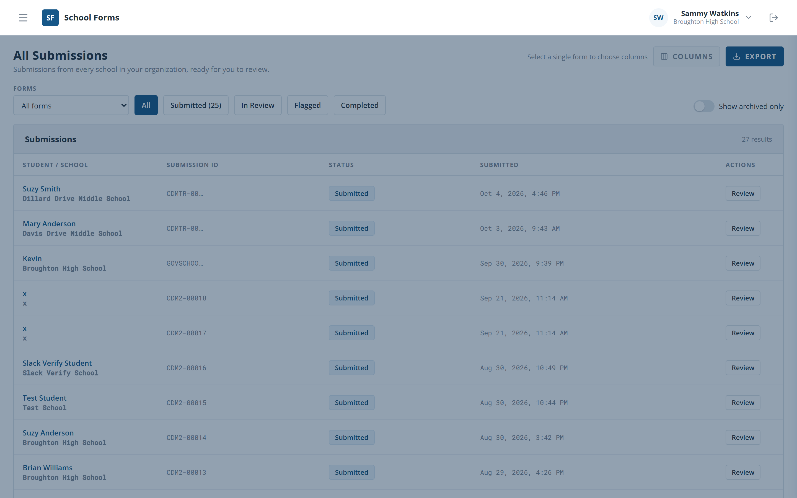
1 2 3 4The file downloads as submissions-export.csv. Use
Reports instead when you need Excel or PDF, or when you want to save the setup
for next time.
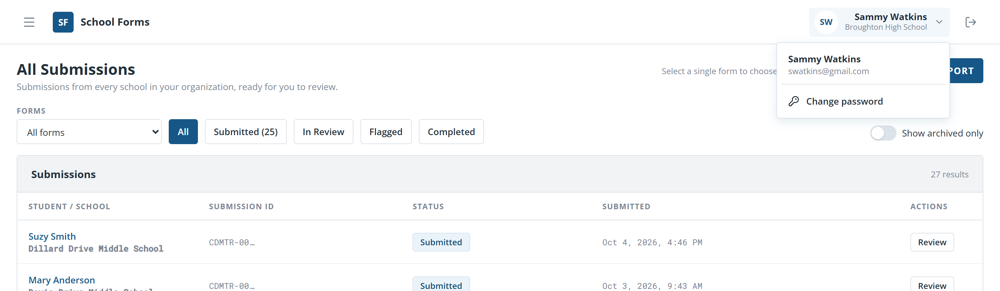
1 2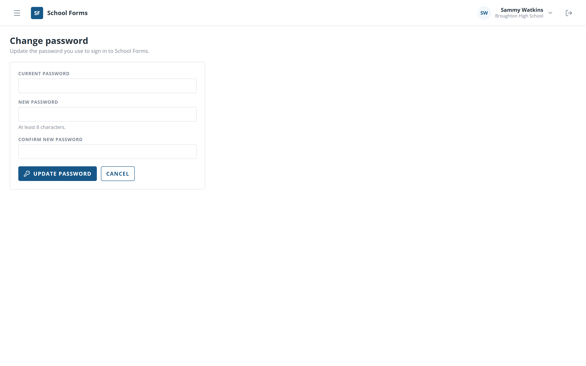
1 2 3 4Changing your password does not sign out copies of School Forms that are already open elsewhere. If you think someone else is using your account, change the password and tell an administrator.
You are taken straight to a version of this page that asks for your Temporary Password instead. It has no Cancel — only Sign out — because the rest of the app stays locked until the password is changed.
Click the log-out button at the far right of the banner. It is the icon beside your name, and it signs you out immediately without asking for confirmation.
| Status | Meaning |
|---|---|
| Submitted | Received and waiting for review. |
| In Review | Someone is working on it. |
| Flagged | Needs attention or a follow-up. |
| Completed | Reviewed and finished. |
Document statuses are separate:
| Document status | Meaning |
|---|---|
| Pending | Still being generated. |
| Completed | Ready to open or preview. |
| Failed | Generation failed. Open the submission and click Retry. |
| Type | What it looks like | How it saves inline |
|---|---|---|
| Text | A short single-line answer. | Enter or click away. |
| Text Area | A longer answer with line breaks. | Enter saves; Shift+Enter adds a line. |
| Number | A numeric value. | Enter or click away. |
| Date | A calendar date. | Enter or click away. |
| An email address. | Enter or click away. | |
| Select | A dropdown of options. | As soon as you pick one. |
| Radio | One choice from a short list. | From the option menu, with Save. |
| Checkbox | One or more choices. | From the option menu, with Save. |
| Toggle | A switch reading No or Yes. | As soon as you flip it. |
| Google Document | A link to a file in Google Drive. | Not editable inline. |
| What is missing | Likely reason |
|---|---|
| Available Forms or Reports in the menu | An administrator hid it in Settings → Menu Settings. Ask them to check. |
| Documents in the menu, or the document line on a submission | The Documents feature is switched off for your role. |
| A private form | You do not hold access yet. Open Available Forms and request it. |
| A staff-only field | Its Access setting in the designer does not include your role. |
| The Forms dropdown on the queue | Only one form is open to you, so the queue selected it for you. |
| The School filter | You are a School Contact — your school is fixed. |
| A submission you saw yesterday | It may have been archived. Switch on Show archived only in the queue. |
| Symptom | What to do |
|---|---|
| The queue says submissions could not be loaded | That is a failed request, not an empty queue. Click Try again; if it persists, tell an administrator. |
| A cell will not save | A red message appears under the cell. Check the value — a number field will not accept letters, and a date needs a real date. Press Esc to abandon the edit. |
| A form says it is not accepting submissions | The form is not published. Only an administrator can publish it. |
| A Google Doc link says you do not have access | Drive permissions are separate from School Forms. Ask for the file or its folder to be shared with you. |
| You are stuck on the temporary-password page | Set a new password, or click Sign out and ask an administrator for help. |
Note the Submission ID (or the form's number) and the time it happened, and contact your administrator. Those two details let them find the exact record.